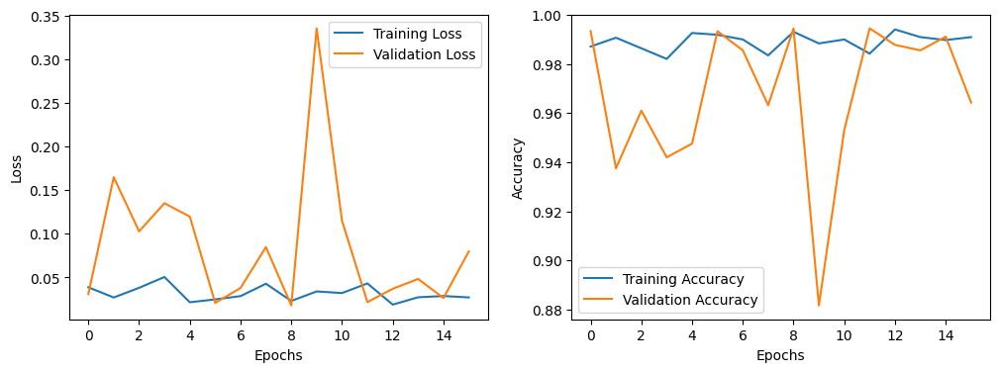
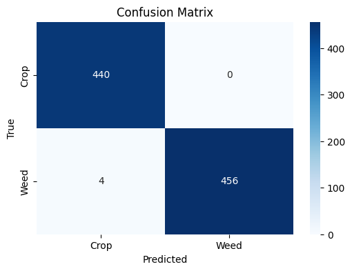
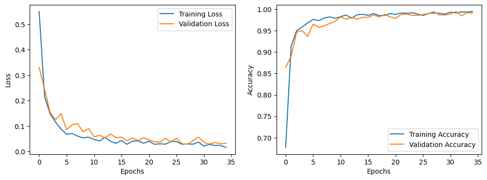
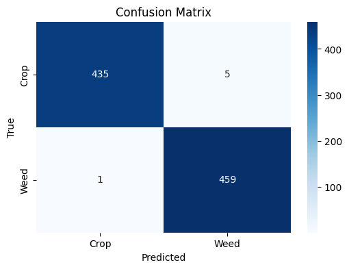
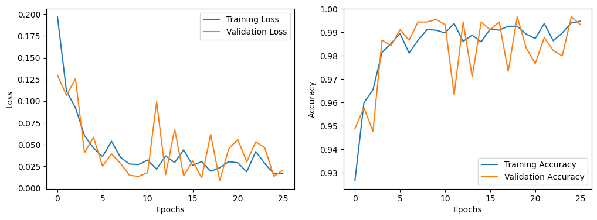

Weed vs Crop Image Classification
Binary image classifier distinguishing crop plants from weeds for real-time agricultural identification, benchmarked across three CNN architectures of very different size and complexity.
Pick a real sample image
The full trained CNN weights aren't shipped to the browser (they're gigabytes), so this isn't live inference — instead, pick one of these 12 real images from the actual Crop/Weed dataset used to train and test the models. You'll see its real ground-truth label plus each model's actual measured precision/recall/f1 for that exact class, straight from their real classification reports on the 900-image test set.
| Model | Precision | Recall | F1 |
|---|
InceptionV3 (transfer learning)
- Dataset split into 4,200 train / 900 validation / 900 test images at 128×128×3 resolution.
- Reached 99.44% validation accuracy.
- Test set precision/recall/f1 of 0.99–1.00 for both Crop and Weed classes.


LeNet-5 (lightweight baseline)
- Same 4,200 / 900 / 900 split, but at a much smaller 32×32 input resolution.
- Only ~91,566 trainable parameters — a fraction of the transfer-learning models.
- Still reached 99% test accuracy with 0.99–1.00 precision/recall for both classes, despite the simple architecture.


Xception (transfer learning)
- Same 4,200 / 900 / 900 split at 299×299 input resolution.
- 22.96M total parameters (2.1M trainable, 20.86M frozen from the pretrained Xception base).
- Test set: 99% accuracy, 0.99–1.00 precision/recall for both classes.


All three architectures converge to ~99% test accuracy — the practical difference is model size: LeNet-5 gets there with ~90K parameters versus Xception's 23M, making it the better choice for edge/real-time deployment where InceptionV3/Xception would be overkill.